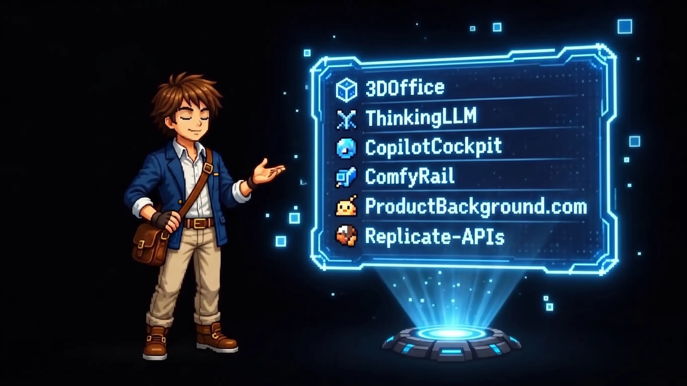
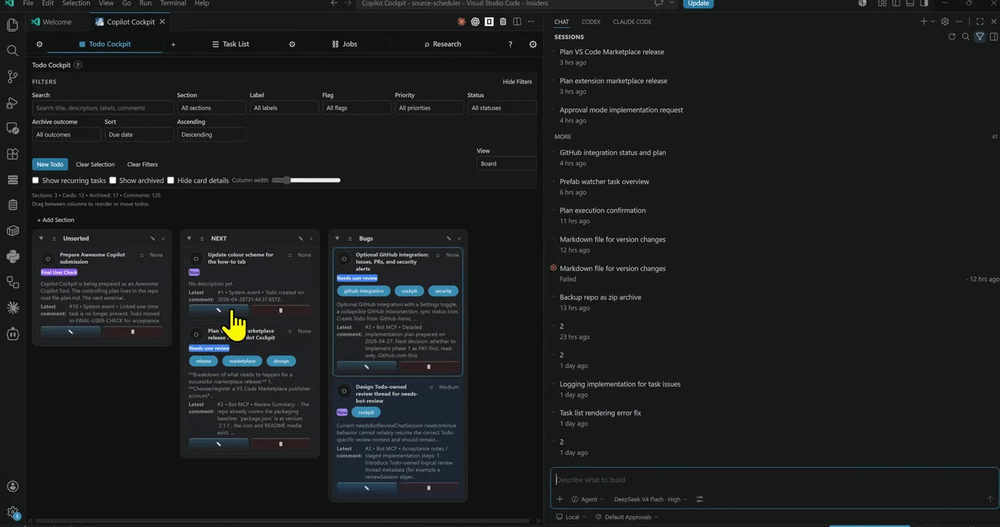

01 / 04
01 / 04
AI product imaging platform
ProductBackground
A solo-built platform that turns product cutouts into professional scenes through background generation, relighting, outpainting, and commercial upscaling.
01 Home module
Technical Creative Generalist
I turn AI workflows, software, and physical ideas into focused systems that people can actually use.

Project index readySelect projects↓ Scroll to work02 Selected work
Each project starts with a complicated workflow and ends with a tool that makes the next step clearer.
01 / 04
AI product imaging platform
A solo-built platform that turns product cutouts into professional scenes through background generation, relighting, outpainting, and commercial upscaling.

02 / 04Developer tooling / VS Code
A persistent control layer for planning, approval gates, recurring work, and bounded AI-agent execution inside VS Code.
 03 / 04
03 / 04
Open-source AI tooling
ComfyUI nodes for local multimodal language models with explicit thinking control, live streaming, audio and vision workflows, and raw trace output.
 04 / 04
04 / 04
Production AI runtime
A maintained ComfyUI runtime system for RunPod Serverless, split into versioned generation, editing, and upscaling profiles behind one stable API contract.
03 Capabilities
Useful products rarely stop at one discipline. I move between strategy, interfaces, code, workflows, and the physical prototype.
ComfyUI systems, model integration, inference pipelines, prompt tooling, and GPU deployment.
From product logic and UX to APIs, storage, payments, deployment, and operational tooling.
Extensions and control surfaces that make AI-assisted work visible, reviewable, and repeatable.
CAD, visualization, design iteration, and production-aware modelling in Fusion 360.
FDM and resin printing, materials, slicer workflows, troubleshooting, and process refinement.
Enclosures, component integration, electronics, PCB concepts, and functional prototypes.
04 System profile
My work sits where digital tools meet materials, machines, and people. I learn by building, reduce complexity through iteration, and care about the last mile between a technical possibility and a usable product.
01Understand the real workflow before choosing the technology.
02Make progress inspectable through prototypes, tests, and visible decisions.
03Connect disciplines instead of optimizing one layer in isolation.
Selected experience
2019 — nowTechnical support across prototyping, 3D printing, and hands-on problem solving.
Independent product design, digital fabrication, and prototype development.
ProductBackground, Comfy Rail, public model deployments, ComfyUI tooling, and developer systems.
A functional digital-signage product prototype spanning hardware, design, and business.
Relevant education
05 Curated archive
Earlier products, practical teaching, and physical experiments that shaped how I build today.
Hardtech / Digital signage
A cloud-controlled, compact display prototype with enclosure, PCB and Compute Module integration, business model, and demo-ready hardware.
Design / Digital fabrication
An independent practice for designed objects, production-ready 3D printing, and customer-specific fabrication projects.
Visit 3DOfficeATWorkshop / Technical support
Supporting students and technical teams in prototyping, fabrication, materials, and practical problem solving.
Experiments / Prototypes
Functional planters, large-format FDM pieces, materials research, machine tuning, and one-off product experiments.
06 Contact
I’m open to selected collaborations and roles where technical curiosity, product thinking, and hands-on execution belong together.